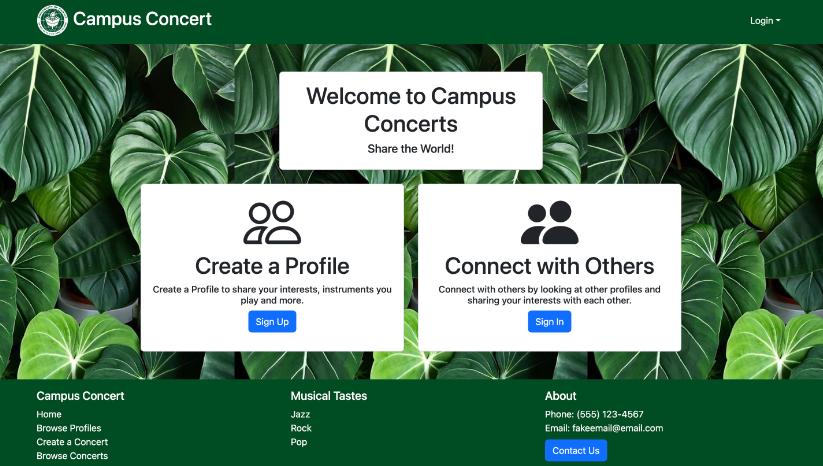
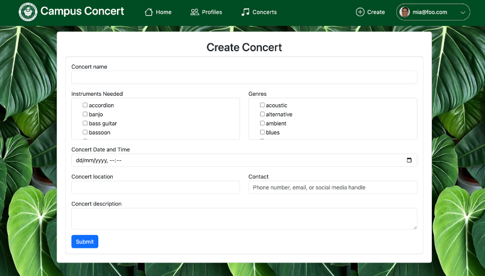
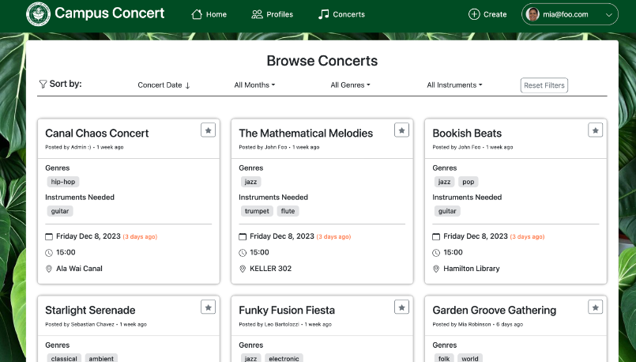

At the University of Hawaii at Manoa, there are a plethora of of clubs and events associated with music every month. However, as a new student, or even as a casual music listener, it may be difficult to join the community on campus. Musical events are often locally advertised by word of mouth. For the most part, the schools emailing system tends to send out news to students based on their majors. As an engineering student, I can't remember the last time I got a reminder about an upcoming concert. This is the reasoning behind the creation of Campus Concert. Along with a group of like-minded individuals, we created an app that allows students on campus to connect with others with similar tastes and to be kept up to date with the latest concerts and events.
For this project, our class was split into teams of five students to work on developing a selected app using React Bootstrap for our styling and Meteor to manage the backend. Each stage of the development was dictated as a "milestone", with each milestone offering additional functionality or assurance testing from the last. During each milestone, the team met three times a week to share progress and decide on the most pressing matters to accomplish. It was also in these meetings that tasks were assigned to each member. To ensure the flawless integration of each component of the site, we used a project board with many issues to keep track of even the most minute changes. Each issue was done in a different branch before being pushed to main to ensure small developments would not break the deployed site. The overall app had the requirements of including key features , such as admin functionality, concert browsing and filtering, user profile development, and more. At the end of each milestone, we gathered feedback from users on the state of the app to plan for the next milestone.

In Milestone 1, I was tasked to create the footer that was to be rendered on all the pages. For the footer, I replaced the template component with a new footer component comprised of three columns, each with a title and a list of links. The first column contained links to various parts of the site that was going to be implemented later. The second column was labeled musical tastes, and was comprised of links that were going to be used to go to filtered concert pages based on the tastes. Finally, the last collumn was used for contact information, including a link to the contact form page where users could submit question to the admins. For each column, an unordered list without bullet points was used. For the first milestone, most of the links to the pages were set to false linkes using "href=#". By the end of the project, the footer was changed so that it did not include the musical tastes column, since that type of page-by-page filtering was not the approach we went for.
For the users to send comments or questions about the website to us, I implemented a contact form page for the first milestone too. When the user clicks on the contact button in the footer, it redirects them to a Uniforms form. The form asks them for their email and a message to send to us. I connected the form to a new collection I created in the API called the Comments collection. The Comments collection had a schema attached to it that required the user to fill out both the email and message TextFields before submitting. In the schema, I used a regex function so that only valid emails that started with characters, had an '@', and ended with characters were allowed. It was not a perfect regex since they are very complicated to write. Instead I counted any string + @ + string as valid. After the user inputs their email and message, they click the submit button and the object is added to the Comments collection of the server. From there, I added a publication with admin role restriction to the Publication.js server side file. Then I added a page that only logged in admin users could use that would subscribe to this publication and render all the submitted comments to the page to be viewed. When the users submit the comments, I also added a hidden date field so that the admins could see when the comments were sent.

In Milestone two, the main goal of our group was to add assurance tests using TestCafe for all of the pages we had so far. I helped my team to create some of these test templates, but my main task for this milestone was adding functionality for concerts. While other team members set up the new Concerts Mongo collection to be used, I created a page to view the users created concerts and also a page to actually create the concerts. This was done using Uniforms as well. To create the concerts a form page was made, containing all the Concerts collection's schema attributes. I made the basic publications and subscriptions for the databases on the client and server and ensured that upon submitting the form, the object was succesfully added to the concerts. Another teamate helped me to further improve the form's schema such that the user knew what syntax to input certain fields for optimal performance. After the user creates a concert, as an owner, in the concert creation page, they can access the My Concerts page from the home page to view them. To make this page I utilized the view profiles template from the classes Meteor React Template.

As the deadline approached, most of the functionality was already implemented since we had so many meetings early on in the timeline. We stayed ahead of schedule almost every week, thus, for the final week we focused on styling and testing mostly. I still had the task of adding one more function to the site though. Bookmarking. This was by far the hardest functionality I worked on for the project. It required a custom nested schema. The outer attribute was an array of bookmark values. Each object in the array was a key-value pair, where the key was a userID and the value was a boolean type true or false. I needed to do this to ensure that bookmarks for one user didn't translate to other logged in users. To actually bookmark a concert, the user clicks the upper right star icon attached to every concert component. The component has a onClick toggle function to handle these clicks. When the button is pressed, it lights up to indicate the bookmarked key-value value is true for that user. The toggle function uses a boolean return expression to toggle the state of the bookmark from false to true or true to false. When it does this it also has to update the concerts collection so that the concert in question changes its bookmarked array attribute. I used a meteor method to check if the currently logged in user already has a bookmark value for the specific concert. If not a new entry to the bookmarked array is added to that concert, with the userID and a boolean value of true. If it does already have one, then it searches for it and toggles the boolean. This is neccesary so that other logged in users add their own userID pairs to the concerts bookmarked array instead of altering another users. Finally, for the publication of the concerts, I created a new bookmarkedUserPublicationName that only included the true bookmarks for the logged in user only. I subscribed to this publication in a bookmarked concerts page, so the user could view only the bookmarked concerts. But, in the browse concerts page, the normal publication was subscribed to so the same user could see all the concerts, bookmarked or not.
Additionally, I added some assurance tests for pages that were missing them, including the contact us page, the browse concerts page, and more.
This project was a very interesting experience for me since it was the first time I was using such detailed project boards and GitHub management during the development. This style of collaborative coding was eye opening, since there were constant commits, but I didn't have a single merging error. By having so many branches with incrementally little changes, each pull request I had to main was spaced closely together. Therefore, I almos always had the latest version locally, so my changes were made to ensure that no breaks occured. This made me really like working in a team environment for once, since it made the project easier instead of harder because of the organization. For the functionality of the site itself, we had to utilize a Meteor APIs which was very intuitive after getting the hang of it. By constantly making mistakes during this project, I think I have a much deeper understanding of how the server and client communicate information, and how to get the desired control over what information is published. The hardest part to me is still styling, as I do not have all the React Boostrap components memorized. I will continue to work on improving that aspect of my skills in the meantime.
You can find the url to the web page here, the GitHub page documentation for Campus Concert here, including the code repo and basic information about the site. </div>